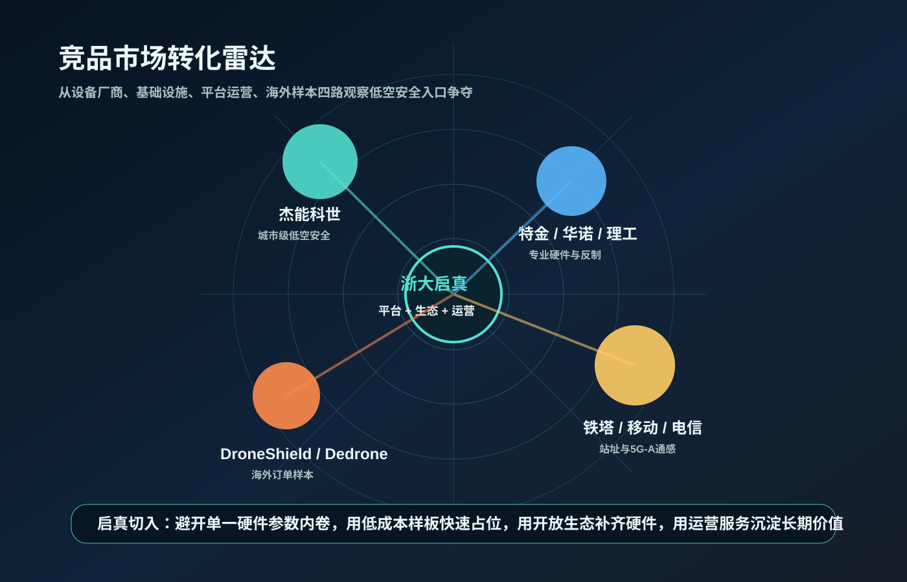
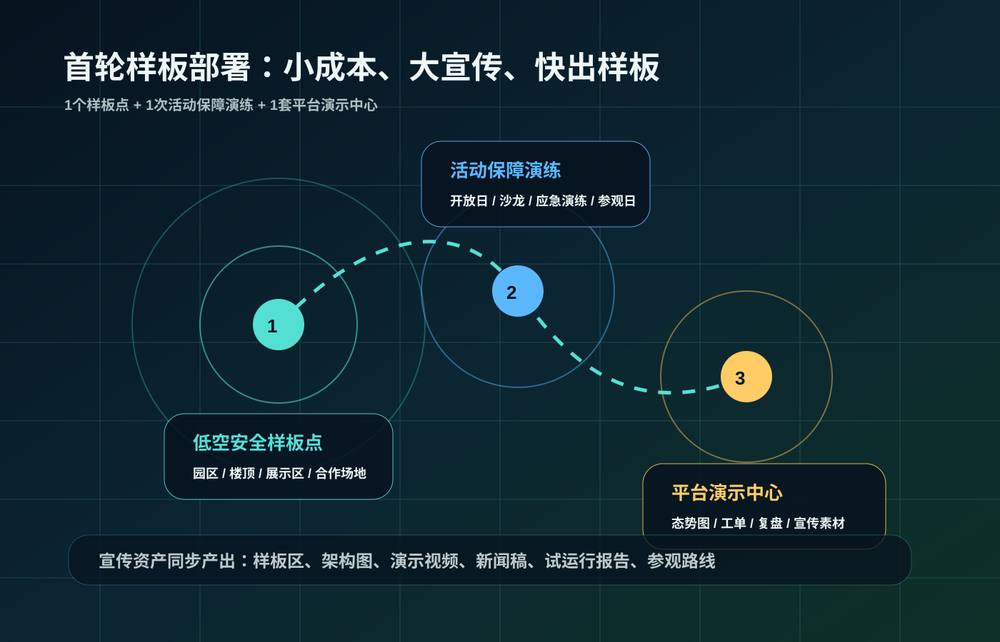

低空经济侦测产品解决方案
先用一个小而亮的样板，把“看得见、判得准、派得出、留得住”跑成闭环，再把它复制到园区、活动、重点区域和城市治理。

看见风险非法破解、黑飞、越界、身份缺失不再靠事后发现。
跑通闭环目标、告警、工单、处置、复盘形成运营链路。
形成样板低成本试点、强宣传包装、可参观可复制。
RF 信号捕获异常遥控 / 图传
风险区域命中禁限飞 / 敏感点
工单闭环处置回传 / 证据归档
版本：V1.0｜日期：2026-05-20｜适用：内部立项、领导汇报、试点决策、后续可研深化
本次汇报聚焦“为什么做、怎么做、花多少钱、先做什么”
01低空经济背景与现实风险
02建设必要性与产品定位
03技术路线与平台架构
04市场竞品与转化情况
05硬件生态与建设方案
06试点、投资、决策建议
叙事主线从政策窗口切入，用现实案例证明必要性，再落到轻资产样板打法。
领导关注少花钱、快出样板、能对外讲、后续可复制，是本轮汇报的核心判断。
产品抓手平台能力自有，硬件生态共建，运营服务形成长期价值。
领导只需要先记住一句话：侦测不是“买设备”，是“拿到低空运营入口”
谁先把低空风险看见，谁就更容易掌握后续运营、数据和服务。
侦测产品是低空经济运营的第一道入口：它连接设备、规则、平台、处置、复盘，也连接客户后续的扩面预算。
对领导：一个能看见成效的低成本样板
对客户：一套能跑日常值守的安全底座
对公司：一个可复制、可报价、可运营的产品包
对生态：一个让硬件伙伴愿意共建的展示窗口
入口价值从“设备采购”升级为“低空安全运营入口”，后续才能承接园区、活动和城市治理。
组织价值把产品、交付、运营、生态和宣传打成一套可复用打法。
商业价值建设收入只是第一步，年度运营、活动保障和平台订阅才是持续空间。
国家和地方政策已经从“鼓励发展”进入“安全健康发展”阶段
国家战略
政府工作报告
2024年提出打造低空经济等新增长引擎，2025年强调安全健康发展。
运行监管
暂行条例
2024-01-01施行，建立实名登记、空域管理、应急处置等制度框架。
运行规则
CCAR-92
明确运行分类、运行人责任、运营合格证和安全管理要求。
强制标准
运行识别
GB 46750-2025、GB 46761-2025于2026-05-01实施。
政策信号低空经济从“能不能飞”进入“如何安全、有序、可监管地飞”。
平台机会实名、识别、空域、应急和审计都需要平台化承接。
启真切口以低空安全感知和运营闭环，成为地方低空经济基础能力的一部分。
依据：政府工作报告、无人驾驶航空器飞行管理暂行条例、CCAR-92、无人机运行识别和实名登记强制性国标。
政策不是背景板，最终要落成平台里的功能按钮和运行规则
实名登记与运行识别无人机身份、位置、速度、状态等信息逐步标准化。
飞行活动与空域管理飞行计划、禁限飞区、临时管制、重点区域管控成为日常需求。
运行人责任与安全管理谁申请、谁执行、谁处置、谁复盘都需要清晰留痕。
应急处置与监督管理发现异常后要能分级响应、联动处置、形成证据链。
→
RID接收 + 身份比对识别合规目标，筛出身份缺失、身份异常、疑似改装目标。
电子围栏 + 规则引擎按区域、时间、高度、任务计划进行自动预警。
工单流转 + 权限审计告警确认、任务派发、处置回传、责任归档全流程闭环。
复盘报告 + 证据链轨迹、截图、视频、操作日志、处置结论统一归档。
无人机规模增长正在倒逼低空治理能力建设
217.7万
注册无人机
截至2024年底，全行业注册无人机达到高基数。
2666.7万
累计飞行小时
2024年无人机全年累计飞行小时持续增长。
5类
并发治理对象
合法飞行、非法飞行、政务飞行、商业飞行、临时飞行将同时存在。
结论：低空经济越发展，越需要安全可控；安全可控越重要，越需要侦测系统。
数量增长注册无人机规模扩大，使异常目标发现从偶发需求变成常态需求。
场景增长巡检、物流、文旅、应急、政务飞行叠加，治理对象更加复杂。
能力增长客户将需要可视化态势、合规留痕、联动处置和运营报表。
依据：中国民航局《2024年民航行业发展统计公报》。
风险不是“有无人机飞过来”这么简单，而是有人在帮它绕开规则

解除限制禁飞区、限飞区、限高限制被破解，合规规则被绕开。
篡改参数大型农用无人机载重等出厂参数被篡改，带来坠落和设施损坏风险。
服务化牟利破解软件、破解服务、破解设备销售形成链条。
治理启示侦测平台要覆盖改装、破解、关闭识别、绕开电子围栏等异常目标。
依据：公安部网安局“公安机关严厉打击非法破解无人机飞行控制系统违法犯罪——公安部公布10起典型案例”。
10起典型案例给侦测产品提了一个硬要求：要能识别“合规外目标”
四川泸州30余台篡改大型农用无人机载重参数，涉及高压电力和坠落风险。
上海奉贤100余台制作并出售解除限高等限制的破解软件。
福建厦门20余台帮助他人破解禁飞区域、限高等限制。
湖北武汉30余台提供破解限高、禁飞区域限制服务。
浙江衢州20余台本省案例，说明浙江场景也有现实治理需求。
湖南张家界20余台文旅场景对低空秩序和游客安全要求高。
山东青岛20余台以公司为掩护提供破解服务。
广东深圳10余台提供破解服务并出售破解无人机。
重庆两江10余台持续提供破解限高、禁飞限制服务。
甘肃陇南10余台跨区域扩散，证明该风险具有可复制性。
产品启示：RID 能识别合规目标，多源侦测要补齐破解、改装、关闭识别和绕开电子围栏目标。
建设侦测产品的四个必要性
公共安全
低慢小目标主动发现
补强传统地面安防对低空目标的发现、取证和处置能力。
产业运营
支撑低空应用开放
为物流、巡检、应急、文旅、园区运营提供安全底座。
公司战略
从交付到运营
沉淀数据、规则、流程、样板和持续服务能力。
合规闭环
反制受控、侦测留痕
把技术能力纳入授权、审计和证据链体系。
客户侧需要的是可解释、可审计、可联动的低空安全能力。
公司侧用侦测切入低空运营，比单纯做平台展示更容易形成刚需入口。
生态侧硬件伙伴需要场景和案例，启真可以提供平台与客户窗口。
低空安全感知与运营平台 + 前端站网 + 机动单元 + 运营服务
低空安全
运营能力包
运营能力包
前端感知射频、RID、雷达、光电、红外、声学、5G-A通感等多源接入。
融合研判目标关联、轨迹重建、白名单比对、风险分级、规则引擎。
联动处置告警确认、工单派发、机动响应、授权反制、结果回传。
运营复盘证据链归档、月报周报、误报治理、场景规则持续优化。
采用“射频优先发现、RID补充身份、雷达补盲跟踪、光电复核取证”的多源融合路线
射频/RID
适合早期发现、身份识别、协议特征和操控源辅助定位。
雷达/光电
适合静默目标发现、持续跟踪、目标复核和证据留存。
平台融合
统一坐标、时间轴、置信度、目标对象和处置事件。
1
发现
多源设备捕获目标或异常信号。
2
识别
比对RID、协议、白名单和计划。
3
研判
结合区域规则输出风险等级。
4
处置
派单、联动、授权、回执。
5
复盘
形成报告、证据和规则优化。
真正要握在自己手里的，是平台底座：接设备、融数据、跑规则、派工单、出报告
感知接入层无线电、RID、雷达、光电、红外、便携设备、车载设备、边缘节点。
融合算法层目标关联、轨迹融合、频谱识别、行为分析、风险评分、异常识别。
数据服务层实时流处理、时空数据仓、规则引擎、证据链、API网关、消息总线。
业务应用层态势总览、预警研判、工单处置、设备运维、报表复盘、安全审计。
运营服务层值守、巡检、演练、调参、月报、活动保障、样板宣传和客户参观。
平台页面建议围绕“态势一张图 + 告警一张单 + 复盘一份报”设计

目标卡片目标编号、来源设备、位置、高度、速度、置信度、RID状态。
告警工单风险等级、触发规则、处置建议、责任人、倒计时、处置回执。
设备健康在线率、链路质量、雷达/光电状态、边缘节点存储和故障工单。
复盘报告轨迹、截图、视频、操作日志、处置结果、优化建议一键归档。
从监管、运营、场景业主、值守和领导五类用户收束需求
监管治理
合规、联动、审计、跨部门协同。
低空运营
飞行任务、异常闭环、运营指标。
场景业主
园区、机场、场馆、重点目标防护。
指挥值守
告警可信、处置清晰、回传方便。
领导决策
价值、预算、风险、成效和复制。
功能关键词：设备接入、目标融合、规则引擎、预警研判、工单处置、指挥展示、运维管理、数据分析、安全审计。
市场已从单点设备采购进入“设备 + 平台 + 服务”组合采购阶段
需求侧
从防黑飞到低空治理
公共安全、基础设施、产业园区、城市级低空治理共同驱动。
供给侧
设备多，运营稀缺
硬件成熟度提升，平台融合和持续运营能力成为缺口。
采购侧
整体能力包
公开中标样本显示，客户越来越关注设备、安装、调试、平台和服务组合。
市场迁移设备采购 → 能力采购 → 运营采购
启真机会平台融合 + 场景运营 + 生态组织
客户更关心“发现后谁处置、如何留痕”
设备厂商更需要“可展示、可复制”的样板窗口
地方政府更需要“低空经济发展与安全治理同频”
启真可把平台、运营、生态整合为解决方案
这不是一个“设备参数”市场，而是四路玩家抢占低空安全入口
本地头部竞品
杰能科世
城市级低空安全、世盾中央大脑、重大活动保障。对标重点是案例包装和治理叙事。
专业硬件厂商
特金 / 理工全盛 / 华诺 / 瑞达恩
射频、TDOA、雷达、光电、反制、要地防护。既是竞品，也是可合作生态。
基础设施玩家
铁塔 / 移动 / 电信
站址资源、5G-A通感、低空智联网、监管平台。适合形成“站址+平台+运营”合作。
海外商业样本
DroneShield / Dedrone / Anduril
订单、平台、公共安全生态均已转化，说明反无人机市场正在进入放量期。

浙大启真的打法：用低成本样板快速占位，用开放生态补齐硬件，用平台运营沉淀长期价值。
头部竞品已经开始用案例、场景和订单建立市场认知
杰能科世
公开披露400多家战略合作单位、1.5万平方公里实时低空监视网络、重大赛事保障等信息。
中国铁塔
复用站址资源构建低空感知基础设施，公开案例包括福州24个站址、湖北152个站址等。
中移凌云
低空综合服务平台正式商用，结合5G-A通感实现黑飞探测和预警能力表达。
我们的差异化：用低成本快速落地，形成地方样板，并把硬件厂商和政府/园区运营需求组织起来。
竞品在讲规模站址数量、覆盖面积、重大活动保障，是当前市场最容易被领导记住的表达。
我们先讲样板用30至60天形成“看得见”的演示闭环，再逐步放大覆盖面。
转化抓手样板区、演示视频、试运行报告、客户参观路线同步交付。
市场已经有真实转化，关键是找到浙大启真的切入姿势
杰能科世
公开披露400多家战略合作单位、1.5万平方公里实时低空监视网络，强调城市级低空安全和重大活动保障。
中国铁塔
复用站址资源建设低空感知基础设施，公开案例包括福州24个站址、湖北152个站址等。
中移凌云
低空综合服务平台正式商用，结合5G-A通感表达黑飞探测、预警和飞控管理能力。
理工全盛
重大活动保障案例丰富，公开资料涉及冬残奥会、杭州亚运会、珠海航展等场景。
DroneShield
公开年报披露2024年收入A$57.5 million，海外反无人机市场已具备订单放量样本。
Dedrone/Axon
多传感器融合平台进入机场和公共安全生态，被Axon收购体现平台化整合趋势。
浙大启真要做“低空安全运营产品与解决方案提供商”
场景化
园区版、活动版、敏感目标版、城区版、应急版。
平台化
设备接入、数据融合、规则引擎、工单处置。
运营化
值守、巡检、演练、月报、复盘、SLA。
生态化
多硬件厂商适配，形成设备组合和认证清单。
样板化
小成本、大宣传、快出样板，支撑客户参观。
一句话定位启真不是进入硬件参数内卷，而是把硬件变成可运营、可展示、可复用的低空安全产品包。
首轮抓手先做一个能让领导带客户参观的样板，再把样板打包成报价与服务目录。
长期壁垒沉淀设备适配、场景规则、运营报表、处置流程和生态伙伴清单。
轻资产生态合作：平台能力自有，硬件能力共建，样板成本共担
01
样机试用
厂商提供1至2套样机，我方提供场景、平台接入和客户参观机会。
02
租赁保障
重大活动和短期试点优先按天、按周或按活动租赁设备和技术人员。
03
联合投标
浙大启真牵头总体方案和运营服务，硬件厂商提供设备与技术支持。
04
生态认证
建立适配清单，按接口、稳定性、场景效果和演示能力评级。
05
联合品牌
“浙大启真平台+厂商设备”，明确平台价值、运营价值和硬件价值。
原则
少而精
射频/RID、雷达、光电、便携反制、5G-A/站址资源各选核心伙伴。
场景开放启真提供试点场景、演示路线和客户参观窗口。
设备接入伙伴提供样机或短租设备，完成接口和数据联调。
联合演示共同完成活动保障、应急演练和客户路演。
联合宣传形成案例稿、视频、架构图和生态伙伴露出。
项目转化按平台、设备、服务分账或联合投标推进。
正式试点建议采用“固定点 + 机动组 + 中心平台”的组合
8个
固定侦测点
中心城区、两个产业园区、敏感目标区，分级配置基础型、增强型、高等级点位。
4组
机动处置单元
便携侦测、便携反制、移动终端、取证设备、通信保障和现场人员。
1套
中心平台
设备接入、融合算法、地图态势、规则引擎、工单处置、报表复盘。

试点视觉：样板点 + 活动保障 + 演示中心建设原则：重点区域优先、风险等级分层、设备组合适配、点位勘察先行。
软件平台模块围绕“发现、研判、处置、复盘、运维、审计”展开
态势总览
二维/三维地图、实时目标、设备状态、风险区域。
目标融合
跨源关联、轨迹融合、重复告警合并、置信度评分。
规则引擎
禁限飞区、白名单、时间窗、高度阈值、行为规则。
预警研判
黑飞、越界、身份缺失、异常盘旋、路径偏离。
工单处置
确认、派发、接单、回执、升级、关闭、复盘。
反制授权
申请、审批、执行、回传、归档，全流程留痕。
运维管理
在线率、链路质量、故障工单、巡检记录、SLA。
数据分析
日报、周报、月报、活动保障报告、扩面建议。
先做MVP闭环，再做标准产品包，最后做城市级运营能力
能力域
MVP样板
一期试点
二期扩面
设备接入
2-3类设备射频/RID/光电基础接入
多源接入雷达、便携、车载、反制设备接入
生态适配库形成设备认证和报价组合
告警处置
告警展示异常目标、风险区域、人工确认
工单闭环派发、接单、回执、升级、归档
跨部门联动对接指挥、应急、园区和安保
运营复盘
演示报告样板日报、事件复盘、视频素材
月报体系在线率、误报率、处置时长、热力图
经营分析客户、场景、成本、收入和扩容建议
建立“1个运营中心 + 4类岗位 + N个协同单位”的运行机制
指挥值守岗
告警确认、风险分级、处置调度、联动指挥。
技术运营岗
规则维护、算法调优、误报治理、报表分析。
设备运维岗
设备巡检、故障处理、备件管理、现场维护。
合规审计岗
授权审核、日志检查、制度执行、审计材料。
运营服务产品化：项目建设带入口，年度运营带收入，活动保障带案例，平台订阅带长期价值。
日常值守形成告警确认、风险分级、派单回执、日报周报的标准节奏。
活动保障将短期保障做成可报价服务，沉淀视频素材和复盘案例。
持续优化每月复盘误报、漏报、处置时长和设备健康，推动规则迭代。
首轮建议“小成本、大宣传、快出样板”
50-200万
首轮宣传型样板预算建议区间。重点不是覆盖最大面积，而是快速形成对外可宣称、对领导可展示、对客户可参观、对媒体可传播、对后续项目可复制的样板。
1个低空安全样板点
园区、楼宇屋顶、低空展示区或合作单位场地。
1次活动保障演练
结合园区开放日、低空经济沙龙、应急演练或客户参观日。
1套平台演示中心
复用现有低空数字孪生平台，包装实时目标、告警工单和运营驾驶舱。
低成本样机试用、短租保障、现有平台复用，优先把现金投入压到可控区间。
大宣传把演示中心、活动保障、视频、新闻稿和参观路线同步设计。
快转化用样板证明“启真能组织低空安全运营”，再承接正式试点。
首轮样板要同步产出“六个一”宣传资产
一套样板区
可现场参观、可演示、可接待客户。
一张架构图
表达平台、设备、运营和生态关系。
一段演示视频
1至2分钟，展示发现、告警、处置、复盘。
一篇新闻稿
用于公众号、政府沟通、客户转发。
一份试运行报告
沉淀数据、告警、事件、问题和优化建议。
一条参观路线
方便领导、客户、生态伙伴快速理解产品价值。
推荐对外口径：浙大启真完成低空侦测与安全运营样板验证，形成多源感知、平台研判、工单处置和复盘报告闭环。
样板要能讲故事：准备三条固定演示脚本
脚本一：夜间黑飞
- 射频设备发现异常遥控/图传信号。
- RID未匹配，平台标记身份缺失。
- 进入敏感区缓冲范围，自动升级告警。
- 光电复核，平台派发处置工单。
- 事件结束后生成复盘报告。
脚本二：园区合法飞行
- 平台接收计划内巡检任务。
- 无人机起飞后显示为合法目标。
- 偏离航线触发提醒而非高危告警。
- 运营人员通知飞手调整航线。
- 任务结束生成运营统计。
脚本三：活动保障
- 活动前下发临时管控区和白名单。
- 外围发现未知目标，触发重要告警。
- 指挥岗派单，机动单元到场。
- 处置回传并归档证据链。
- 活动结束输出保障报告。
12个月试点周期：从方案深化到扩面建议
1
1-2月
方案深化、设备清单冻结、点位勘察、电磁测试。
2
3-5月
设备安装、网络接入、平台部署、接口联调。
3
6-9月
常态试运行、告警复盘、误报治理、活动保障。
4
10-12月
评估验收、运营成效评估、商业化定价建议。
5
二期
按试点数据决定园区、活动、敏感目标和城市扩面。
前2个月把点位、设备、接口、演示脚本和宣传计划一次性拉齐。
中期运行重点沉淀真实告警、误报治理、值守流程和活动保障案例。
验收输出形成扩面建议、运营定价、设备组合和可复制交付手册。
试点验收不要只看“大屏能不能亮”，要看闭环是否跑起来
≥90%目标发现率重点区域目标发现能力验证。
≥80%有效预警率告警规则和误报治理能力验证。
≥99.5%平台可用性核心平台稳定运行能力验证。
≥95%事件闭环率工单派发、回传、归档是否跑通。
↓30%处置时长平均处置闭环时长较基线下降。
试点产物：态势图、处置单、周报/月报、复盘档案、扩面建议和可复制报价包。
先花小钱做出“能讲的样板”，再用样板撬动正式试点
50-200万
宣传型样板
样机/短租设备、平台适配、演示驾驶舱、宣传视频、试运行报告。目标是快出样板、快接待、快转化。
1100-2240万
正式试点 CAPEX
固定点、机动组、中心平台、施工集成、安全等保、培训验收。按8点、4组、1平台测算。
250-580万/年
年度 OPEX
运维服务、云资源、专线、值守、模型调优、演练、备件校准。建议单独列项，形成持续收入。
采用多元资金组合，先轻资产验证，再按效果扩展投入
财政资金
公共安全底座、城市治理平台。
购买服务
值守、运维、活动保障、数据分析。
园区共建
产业园、物流基地、低空示范区。
专项资金
低空经济、新基建、数字治理。
社会资本
低空运营平台、起降点网络、飞行服务。
首轮资金策略以样机、租赁、共建和宣传预算组合，控制现金投入，先验证展示价值。
正式试点策略建设类投入与年度运营服务拆分，便于后续形成持续收入。
扩面策略用试点报告和宣传资产撬动园区、活动保障、专项资金和客户采购。
项目价值体现为公共安全、运营收入和产业生态三类收益
社会效益
提升低空异常目标主动发现能力，支撑重大活动、重点区域和城市治理。
经济效益
形成建设收入、年度运营收入、活动保障收入和平台订阅收入。
产业效益
连接装备、软件、通信、系统集成、运维和数据服务生态。
风险控制抓五件事
多源融合降低误报漏报；授权流程控制反制边界；分期建设控制预算；PMO机制提升协同；开放接口降低厂商锁定。
三阶段产品路线：试点闭环、场景复制、城市级运营
一期
试点闭环版
设备接入、地图态势、目标展示、告警规则、工单处置、报表复盘。
二期
多场景复制版
多园区管理、场景模板、活动保障模板、移动端、SLA管理。
三期
城市级运营版
城市级态势、多部门联动、飞行计划关联、风险预测、数据服务。
样板可讲先让客户看得见：态势图、告警单、处置流、复盘报告。
场景可卖沉淀园区、活动、敏感目标、应急保障等标准产品包和报价包。
城市可运营连接多部门、多站网、多任务，形成持续服务和数据运营能力。
建议今天先批一个“能快速出圈的试点”，而不是等一个完美的大工程
1
批一个样板
1个样板点、1次活动演练、1套演示中心，先形成市场声量。
2
批一套打法
轻资产生态合作，样机、租赁、联合品牌、共同宣传。
3
批一个组织
成立跨部门PMO，产品、技术、交付、运营、合规一起推进。
4
批一个闸口
样板达标后，再进入正式试点和二期扩面。
战略价值：把浙大启真从低空项目交付商，推向低空安全运营商和低空治理能力提供商。
今天要拍板样板预算、PMO机制、生态伙伴名单和30至60天交付目标。
对外要包装“浙大启真低空侦测与安全运营样板”作为统一传播口径。
后续要扩面样板跑通后，进入园区、活动保障和城市治理三个复制方向。
主要依据来源
政策与标准
政府工作报告；《无人驾驶航空器飞行管理暂行条例》；CCAR-92；GB 46750-2025；GB 46761-2025；浙江和杭州低空经济政策。
行业与案例
中国民航局《2024年民航行业发展统计公报》；公安部网安局10起非法破解无人机飞行控制系统典型案例。
费用测算
中国政府采购网、公共资源交易平台公开无人机探测识别、侦测反制、固定式侦测反制系统项目。
竞品参考
杰能科世、上海特金、理工全盛、华诺星空、瑞达恩、中国铁塔、中移凌云、中国电信、DroneShield、Dedrone/Axon、Anduril等公开资料。
汇报口径政策有依据、市场有案例、费用有公开项目参照，适合进入领导决策讨论。
下一步动作确定样板点、确定生态伙伴、冻结MVP演示范围和宣传产物清单。
建议决策先批宣传型样板预算和跨部门PMO机制，用30至60天形成可参观成果。